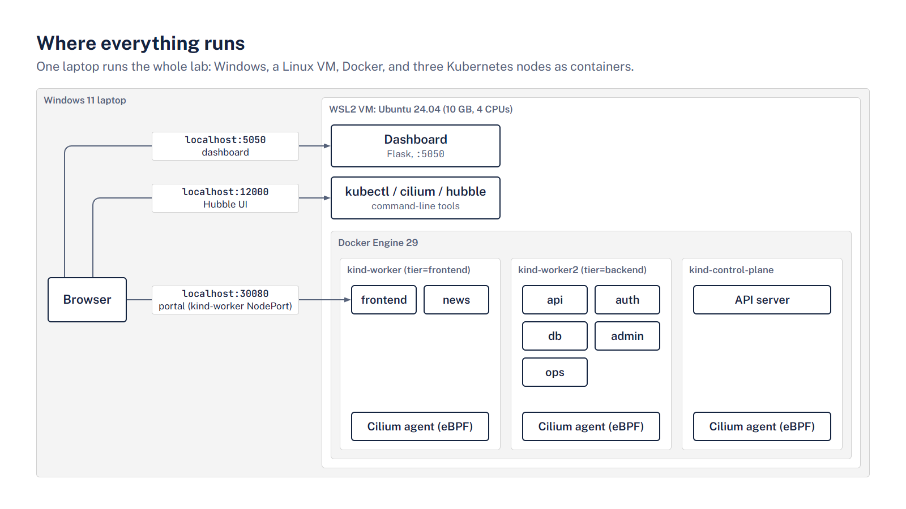

Chapter 3. Set up the environment
At the end of this chapter your Ubuntu has the memory, processors and kernel settings the cluster needs, Docker runs without sudo, and the exact versions of kind, kubectl, cilium and hubble are installed and checked against their published fingerprints. A Python environment for the dashboard, the control page you build in chapter 7, is ready too. One script, check-env.sh, tests all of it and must print 14 of 14 checks passed. Plan on 2 to 2.5 hours, most of it spent waiting for downloads.
Work in the Ubuntu terminal unless a block is labelled powershell. Many blocks start with sudo, which runs a command with administrator rights and asks for the Linux password you created in chapter 2. Right before every block that contains sudo, run sudo true on its own and type your password. Nothing appears on the screen while you type, which is normal. sudo then remembers the password in that terminal for 15 minutes, so the block you paste next isn't interrupted by the password question halfway through. If [sudo] password for appears while a pasted block is running, those 15 minutes ran out and sudo is reading your pasted lines as a password. Press Ctrl+C, run sudo true, type your password and paste the block again.
Give WSL 10 GB of memory and the kernel modules Cilium needs
WSL runs Ubuntu inside a virtual machine, a complete computer simulated in software that borrows memory and processors from Windows. By default it takes half of your laptop's memory and loads only the Linux kernel parts that most people need. Your cluster needs about 10 GB, and Cilium needs several kernel modules, extra pieces of the Linux kernel that WSL ships but doesn't switch on. One Windows file, .wslconfig, controls both.


In figure 2, Ubuntu, Docker, the three cluster nodes and every pod all sit inside the one WSL virtual machine, so the memory you set in this step is shared by all of them. A pod is the smallest unit Kubernetes runs, one or more containers that share a network address, and chapter 4 says more about it.
Press the Windows key, type notepad and press Enter. If Notepad opens with old text or tabs, click the + next to the tabs to get a new empty one. Paste the following text into the empty Notepad window. Every value has to be exactly as shown, and the long loadKernelModules line must stay on one line.
[wsl2]
memory=10GB
processors=4
swap=4GB
networkingMode=nat
localhostForwarding=true
loadKernelModules=xt_socket,xt_TPROXY,xt_mark,xt_CT,xt_set,ip_set_hash_ip,xt_comment,iptable_raw,iptable_mangle,ip6table_raw,ip6table_mangle,sch_ingress,cls_bpf,xt_recent
[general]
instanceIdleTimeout=-1Click File, then Save as. Click the address bar at the top of the Save as window, type %USERPROFILE% and press Enter, which opens your Windows user folder (C:\Users\<WinUser>). In the Save as type list choose "All files". In the File name box type .wslconfig, with the dot at the start and nothing after it. Click Save and close Notepad. If Windows says that .wslconfig already exists and asks whether to replace it, click Yes. Tools such as Docker Desktop sometimes create this file, and your version has to replace theirs. If you leave Save as type on "Text documents", Notepad adds .txt to the name without telling you and WSL never reads the file.
(1) [wsl2] starts the section with settings for the WSL 2 virtual machine.
(2) memory=10GB gives the virtual machine 10 GB of your laptop's memory. That leaves about 6 GB for Windows on a 16 GB laptop.
(3) processors=4 gives it 4 processor threads.
(4) swap=4GB sets up 4 GB of swap, disk space that Linux uses as overflow when memory runs out. It's slow, but it stops programs from being killed during a short peak, such as the moment all three nodes start together.
(5) networkingMode=nat keeps WSL's normal network mode, in which Ubuntu sits behind Windows the way a home laptop sits behind its router. The guide was tested in this mode, so the file names it explicitly instead of trusting the default.
(6) localhostForwarding=true makes a port that a program opens on localhost inside Ubuntu reachable as localhost from Windows too. That's how your Windows browser will open the Campus Portal, the website you build in this project, at http://localhost:30080, and Hubble's web page at http://localhost:12000. Hubble is the part of Cilium that records every connection in the cluster.
(7) loadKernelModules= lists the kernel modules WSL loads every time it starts. Kubernetes and Cilium build firewall rules out of them. Two are worth knowing by name. xt_TPROXY and xt_socket let Cilium hand web requests to Envoy, a proxy that Cilium runs, meaning a program that sits in the middle of a web request and passes it on. Envoy enforces the L7 part of your policies in chapter 10, the part that looks inside web requests. If those two modules are missing, the Cilium agent fails or the L7 part doesn't work. Of the others, sch_ingress and cls_bpf give Cilium an older way to attach its eBPF programs, the small programs it loads into the Linux kernel, and Cilium falls back on that way if the kernel lacks the newer one.
(8) [general] starts the section with settings for WSL as a whole.
(9) instanceIdleTimeout=-1 keeps Ubuntu running after you close its last terminal window. Without it, WSL stops Ubuntu a short while after the last window closes, and Docker, your cluster and the dashboard stop with it.
Now check from PowerShell that Windows sees the file under the right name. Open Windows PowerShell and run this.
Get-Content "$env:USERPROFILE\.wslconfig"Get-Content prints a text file. $env:USERPROFILE is PowerShell's name for your Windows user folder, the same folder %USERPROFILE% opened in Notepad.
You should see the text you pasted, line for line.
[wsl2]
memory=10GB
processors=4
swap=4GB
networkingMode=nat
localhostForwarding=true
loadKernelModules=xt_socket,xt_TPROXY,xt_mark,xt_CT,xt_set,ip_set_hash_ip,xt_comment,iptable_raw,iptable_mangle,ip6table_raw,ip6table_mangle,sch_ingress,cls_bpf,xt_recent
[general]
instanceIdleTimeout=-1Compare the loadKernelModules line character by character with the block above. A missing comma joins two names into one that doesn't exist, and neither module loads.
If you see this instead
Get-Content : Cannot find path 'C:\Users\Ghufran\.wslconfig' because it does not exist.Your own user name appears where this example shows Sara. The file was saved under another name, almost always .wslconfig.txt. Open File Explorer, go to C:\Users\<WinUser>, click View, then Show, then File name extensions, and rename the file to .wslconfig. Windows asks if you really want to change the extension. Click Yes.
The file prints, but the long line is broken in two, or a line starts with a space. Open it again with notepad "$env:USERPROFILE\.wslconfig" in PowerShell, put the text back exactly as shown above and save.
Restart WSL, then check what it got
WSL reads .wslconfig only when its virtual machine starts. Close every Ubuntu terminal and every VS Code window that is connected to Ubuntu, then stop the whole virtual machine from PowerShell.
wsl --shutdown
wsl --list --runningwsl --shutdown stops every running Linux distribution and the virtual machine they share. wsl --list --running lists the distributions that are still running, and after a shutdown there should be none.
You should see one line saying that no distribution is running.
There are no running distributions.If you see this instead
The second command still lists Ubuntu-24.04. A VS Code window or a terminal you forgot has reconnected to Ubuntu and started it again. Close it, wait ten seconds and run both commands once more.
Now open Ubuntu again the way chapter 2 showed you. Check that the virtual machine got its memory and processors.
free -h
nprocfree -h shows memory, and -h prints it in human sizes such as Gi instead of bytes. nproc prints the number of processors Ubuntu can use.
You should see a small memory table followed by a single number.
total used free shared buff/cache available
Mem: 9.7Gi 530Mi 8.5Gi 4.1Mi 831Mi 9.2Gi
Swap: 4.0Gi 0B 4.0Gi
4On the Mem: line, the total column must read about 9.7Gi. Linux reports a little less than the 10 GB you asked for, because the kernel keeps some memory for itself. The Swap: line shows 4.0Gi in the total column. The last line must be 4. The used and free columns change all the time, so ignore them.
If you see this instead
The total on the Mem: line is about 7.8Gi instead of 9.7Gi. WSL didn't read your file. Either its name is wrong (go back to the previous step and run the Get-Content check) or WSL wasn't fully stopped. Close every Ubuntu and VS Code window, run wsl --shutdown again, wait ten seconds and reopen Ubuntu.
nproc prints a number below 4. Your laptop has fewer than 4 processor threads, which chapter 0 asked you to check. The lab can't run on this machine.
Next, check that the kernel modules were loaded.
lsmod | grep -E "^(xt_socket|xt_TPROXY|cls_bpf|sch_ingress)"lsmod lists every loaded kernel module, one per line. The | symbol, called a pipe, sends that list into grep, which keeps only matching lines. -E lets the pattern use | to mean "or", and ^ means the name must sit at the start of the line. So the command keeps the lines for four of the modules from your file.
You should see four lines, one per module, each starting with the module's name.
cls_bpf 20480 0
sch_ingress 16384 0
xt_TPROXY 12288 0
xt_socket 12288 0The numbers after each name are sizes and use counts, and yours can differ. Only the four names have to match.
If you see this instead
You get no output at all, or fewer than four lines. Look at the loadKernelModules line in .wslconfig again for a typo or a line break, fix it, run wsl --shutdown in PowerShell and reopen Ubuntu.
Last, check that systemd is running. Systemd is the first program Linux runs at boot, and it launches and supervises background services. One of those services will be Docker's daemon, a program that runs in the background and waits for requests. Ubuntu 24.04 on WSL switches systemd on by default, and these two commands confirm it.
ps -p 1 -o comm=
cat /etc/wsl.confps lists running programs. -p 1 picks process number 1, the first program the system started, and -o comm= prints only its name, with the = removing the column heading. cat prints a file. /etc/wsl.conf is the settings file that WSL reads for this one distribution, Ubuntu, while .wslconfig on the Windows side configures the whole virtual machine.
You should see systemd on the first line, then the contents of /etc/wsl.conf.
systemd
[boot]
systemd=true
[user]
default=studentThe file must contain a [boot] line followed by systemd=true. It may hold other lines too, such as a [user] section with your user name. Leave those alone.
If you see this instead
The first line reads init instead of systemd, and /etc/wsl.conf has no systemd=true line. Open the file with sudo nano /etc/wsl.conf, add the two lines [boot] and systemd=true at the end, press Ctrl+O and Enter to save, then Ctrl+X to leave. Run wsl --shutdown in PowerShell, reopen Ubuntu and check again.
Raise the inotify limits for kind's nodes
Inotify is the Linux feature that lets a program ask to be told when a file changes. Every kind node runs its own systemd and its own Kubernetes agent, and each of them watches many files. Ubuntu's default limits are sized for one ordinary computer, and three nodes running side by side use them up, after which a node never finishes starting. kind's documentation names this as a known problem and gives these two values.
echo -e "fs.inotify.max_user_watches=524288\nfs.inotify.max_user_instances=512" | sudo tee /etc/sysctl.d/99-kind.conf
sudo sysctl --system >/dev/null
sysctl fs.inotify.max_user_watches fs.inotify.max_user_instancesThe first line writes the new settings to a file. echo -e prints its text and turns \n into a line break, so the text becomes two lines, one setting each. The pipe hands those lines to sudo tee /etc/sysctl.d/99-kind.conf, which writes them into that file and also prints them. You need tee here because files under /etc belong to the administrator: in sudo echo ... > file, the > part would run without administrator rights and fail. Files in /etc/sysctl.d/ are read again at every start, so the setting survives restarts.
sudo sysctl --system loads every settings file in that folder now, without a restart. >/dev/null throws its long normal output away. Error messages still appear, because they travel on a separate channel that this redirection doesn't touch.
The last line, sysctl with two setting names, prints their current values so you can see that they changed.
You should see the two lines written to the file, then the two values now active.
fs.inotify.max_user_watches=524288
fs.inotify.max_user_instances=512
fs.inotify.max_user_watches = 524288
fs.inotify.max_user_instances = 512The last two lines must read fs.inotify.max_user_watches = 524288 and fs.inotify.max_user_instances = 512.
If you see this instead
Sorry, try again.sudo asked for your password and read one of the pasted lines as the password, or the password was mistyped. Press Ctrl+C to stop, run sudo true on its own, type your password, then paste the block again.
Install curl, jq and python3-venv
Ubuntu installs software as packages, ready-made bundles that its package manager, apt, downloads from a repository, a server that hosts packages. This step installs four packages that later steps need.
sudo apt-get update -qq
sudo apt-get install -y -qq ca-certificates curl jq python3-venv >/dev/null
jq --versionsudo apt-get update refreshes apt's list of which packages and versions exist. -qq makes it very quiet. apt-get install -y installs the packages named after it, and -y answers "yes" to the question about disk space for you.
ca-certificates holds the list of authorities Ubuntu needs to trust HTTPS sites, and curl downloads files from web addresses. You'll use jq from chapter 7 on to read and filter JSON. python3-venv is the part of Python that creates virtual environments, which you'll do at the end of this chapter. jq --version at the end proves jq installed.
You should see a single version line after a minute or so.
jq-1.7If you see this instead
E: Unable to acquire the dpkg frontend lock (/var/lib/dpkg/lock-frontend), is another process using it?Ubuntu is installing its own automatic updates in the background, which often happens in the first hours after installation. Wait five minutes and run the block again. Don't delete the lock file, since that can break the package system.
Temporary failure resolving 'archive.ubuntu.com'Ubuntu can't reach the internet. Check that Windows is online. A VPN on Windows often blocks WSL's network, so disconnect it and try again.
Add Docker's package repository
Docker Engine is the free Docker program for Linux that builds images and runs containers. Ubuntu's own repository carries an older Docker under another name, so you add Docker's own repository to apt. Apt checks every package from it against Docker's signing key, a public key that proves a package was published by Docker and wasn't altered on the way.
If Docker Desktop is installed on your Windows, deal with it first. Docker Desktop is a separate Windows program that can put its own docker command into your Ubuntu, and then your commands reach its engine instead of the one you're about to install. Open Docker Desktop, go to Settings, then Resources, then WSL integration. Untick "Enable integration with my default WSL distro" at the top of that page, because Ubuntu-24.04 is probably your default distribution and that box keeps the integration on whatever the list below it says. Then switch Ubuntu-24.04 off in the list and click "Apply & restart" (some versions label it "Apply"). You don't need to uninstall Docker Desktop, but don't use it for this project. A check later in this chapter confirms which engine answers.
sudo install -m 0755 -d /etc/apt/keyrings
sudo curl -fsSL https://download.docker.com/linux/ubuntu/gpg -o /etc/apt/keyrings/docker.asc
sudo chmod a+r /etc/apt/keyrings/docker.asc
sudo tee /etc/apt/sources.list.d/docker.sources <<EOT
Types: deb
URIs: https://download.docker.com/linux/ubuntu
Suites: $(. /etc/os-release && echo "${UBUNTU_CODENAME:-$VERSION_CODENAME}")
Components: stable
Architectures: $(dpkg --print-architecture)
Signed-By: /etc/apt/keyrings/docker.asc
EOTPaste the whole block at once. While you paste, the terminal shows > at the start of the lines after <<EOT. That's bash collecting the lines it will write to the file, and it stops at the line that reads EOT alone.
(1) sudo install -m 0755 -d /etc/apt/keyrings creates the folder where apt keeps signing keys. -d means "create a directory", and -m 0755 sets its permissions so everyone can read it but only the administrator can change it.
(2) sudo curl -fsSL <url> -o <file> downloads Docker's signing key into that folder. -f makes curl fail on a server error instead of saving the error page, -s hides the progress bar, -S still shows an error if one happens, -L follows a redirect to the file's real location and -o names the output file.
(3) sudo chmod a+r makes the key readable by all users, because apt reads it under a user of its own.
(4) sudo tee /etc/apt/sources.list.d/docker.sources <<EOT writes the lines up to EOT into a new apt source file and prints them. Inside those lines, $( ... ) runs a command and puts its output in its place. . /etc/os-release reads Ubuntu's release file, which defines the codename of your Ubuntu version, and echo prints it. dpkg --print-architecture prints your processor type.
The fields tell apt that this source holds deb packages, Ubuntu's package format, and where the server is. Suites and Architectures pick the Ubuntu version and processor type to fetch for, Components: stable asks for Docker's stable releases only, and Signed-By names the key that signs them.
You should see the file contents with the two computed values filled in.
Types: deb
URIs: https://download.docker.com/linux/ubuntu
Suites: noble
Components: stable
Architectures: amd64
Signed-By: /etc/apt/keyrings/docker.ascSuites: must read noble, the codename of Ubuntu 24.04, and Architectures: must read amd64.
If you see this instead
curl: (6) Could not resolve host: download.docker.comUbuntu has no internet access at this moment. Fix the connection as in the previous step and run the block again. It's safe to repeat, since every line overwrites what it wrote before.
Suites: is empty. The $( part was retyped by hand and a character is missing. Paste the block again from this page.
[sudo] password for appeared in the middle of the paste, followed by lines such as these.
Types:: command not found
EOT: command not foundsudo's 15 minutes ran out, the password question swallowed some of the pasted lines, and bash then ran the file's lines as commands. Press Ctrl+C, run sudo true, type your password and paste the whole block again. It rewrites the file from the start.
Install Docker Engine 29
Now apt can fetch Docker from Docker's own repository.
sudo apt-get update -qq
DOCKER_VERSION=5:29.10.0-1~ubuntu.24.04~noble
sudo apt-get install -y -qq docker-ce=$DOCKER_VERSION docker-ce-cli=$DOCKER_VERSION containerd.io docker-buildx-plugin docker-compose-plugin >/dev/null
sudo docker version --format 'docker client {{.Client.Version}} server {{.Server.Version}}'The first line refreshes the package list, which now includes Docker's repository. The second line stores the exact Docker version this guide was tested with in a variable named DOCKER_VERSION. The 5: at its start and the part after 29.10.0 are how Docker's repository labels its 29.10.0 build for Ubuntu 24.04. The third line installs five packages, and =$DOCKER_VERSION after the first two names asks apt for that exact version instead of the newest one. docker-ce is the Docker daemon itself, and docker-ce-cli is the docker command you type. containerd.io is the lower-level program that actually starts and stops containers for the daemon, and docker-buildx-plugin is the builder behind docker build. docker-compose-plugin is part of Docker's standard installation, although this project doesn't use it.
The third line prints nothing for a few minutes while about 100 MB downloads. Wait for the version line and the prompt, and don't press Ctrl+C in the meantime. The last line asks Docker for its version. It needs sudo because your user doesn't have permission to use Docker yet, which the next step fixes. --format picks two fields out of Docker's long version report and prints them on one line.
You should see one line with the same version twice.
docker client 29.10.0 server 29.10.0Both numbers must read 29.10.0, because the install line asked for exactly that version.
If you see this instead
E: Unable to locate package docker-ceApt doesn't know Docker's repository, because the file from the previous step is missing or has a typo. Run cat /etc/apt/sources.list.d/docker.sources, compare it with the output shown in the previous step and repeat that step if anything differs.
E: Version '5:29.10.0-1~ubuntu.24.04~noble' for 'docker-ce' was not foundThe version line was retyped and a character differs. Copy the whole block again from this page and run it.
An error that starts with this text:
failed to connect to the docker API at unix:///var/run/docker.sock; check if the path is correct and if the daemon is runningThe daemon didn't start, almost always because systemd isn't running. Go back to the systemd check earlier in this chapter.
Let your user run Docker (no sudo)
Every Docker command talks to the daemon through a special file, /var/run/docker.sock, and only members of the docker group may use it. A group is a named list of users that share a permission. kind, setup.sh and deploy.sh call Docker as your user, so your user joins that group.
sudo usermod -aG docker "$USER"usermod changes a user account. -G docker names the group, -a means "add to the groups I'm already in" instead of replacing them, and "$USER" is your own user name. The command prints nothing.
Linux reads a user's groups when a session starts, so the change only counts in a fresh session. Close every Ubuntu window, then run this in PowerShell.
wsl --terminate Ubuntu-24.04wsl --terminate stops one distribution and leaves the virtual machine running. You need it here because instanceIdleTimeout=-1 keeps Ubuntu alive after its windows close, so closing them alone doesn't start a fresh session.
You should see one line confirming that the operation completed.
The operation completed successfully.Open Ubuntu again and run Docker's own test container without sudo.
docker run --rm hello-worlddocker run starts a container from an image, here Docker's tiny test image hello-world. Docker downloads the image first because it isn't on your laptop yet. --rm deletes the container once it finishes.
You should see the download lines, then a short greeting from Docker.
Unable to find image 'hello-world:latest' locally
latest: Pulling from library/hello-world
4f55086f7dd0: Pull complete
d5e71e642bf5: Download complete
Digest: sha256:1e4c05b897a751332ce85c7e9449da2d93514ea2dea6dbb0e2753c9e949b2bfa
Status: Downloaded newer image for hello-world:latest
Hello from Docker!
This message shows that your installation appears to be working correctly.
To generate this message, Docker took the following steps:
1. The Docker client contacted the Docker daemon.
2. The Docker daemon pulled the "hello-world" image from the Docker Hub.
(amd64)
3. The Docker daemon created a new container from that image which runs the
executable that produces the output you are currently reading.
4. The Docker daemon streamed that output to the Docker client, which sent it
to your terminal.
To try something more ambitious, you can run an Ubuntu container with:
$ docker run -it ubuntu bash
Share images, automate workflows, and more with a free Docker ID:
https://hub.docker.com/
For more examples and ideas, visit:
https://docs.docker.com/get-started/Look for the line Hello from Docker!. The download lines and the long sha256: code only appear the first time.
If you see this instead
An error that starts with this text:
permission denied while trying to connect to the docker API at unix:///var/run/docker.sockYour session doesn't have the docker group yet. Run getent group docker, which prints the group's saved members at the end of its line. If your user name isn't there, the usermod command never ran, so run it again. Then close every Ubuntu window, run wsl --terminate Ubuntu-24.04 in PowerShell and reopen Ubuntu. If id then shows docker in its groups= part but the error stays, go to the Docker Desktop check below.
Command 'docker' not found, but can be installed with:The install step failed earlier without you noticing. Don't follow the suggestion Ubuntu prints under that line, because it installs a different Docker. Run the "Install Docker Engine 29" step again and look for any line starting with E:.
Check that Ubuntu's own Docker answers
If Docker Desktop's WSL integration is still switched on, your docker commands reach Docker Desktop's engine, with a different version and different settings. Check which engine answers, even if you've never installed Docker Desktop.
docker info --format "{{.OperatingSystem}}"docker info describes the engine that answered, and --format picks out the operating system it runs on.
You should see one line naming an operating system.
Ubuntu 24.04.5 LTSThe line must start with Ubuntu 24.04. If it reads Docker Desktop instead, switch off Docker Desktop's WSL integration for Ubuntu-24.04 as described at the start of "Add Docker's package repository", including the "Enable integration with my default WSL distro" box at the top of that page. Then run wsl --terminate Ubuntu-24.04 in PowerShell, reopen Ubuntu and run the check again.
Install kind (v0.33.0)
kind ("Kubernetes in Docker") builds a Kubernetes cluster out of Docker containers, one container per node. It's a single binary, a ready-to-run program file, so you download it and put it in a folder where bash finds commands. Before you install it, you check its checksum, a fingerprint computed from every byte of the file. The kind project publishes the expected fingerprint next to each download, and if a single byte differs, for example because the download was cut short, the fingerprints don't match.
cd ~
curl -fsSLO https://kind.sigs.k8s.io/dl/v0.33.0/kind-linux-amd64
curl -fsSLO https://kind.sigs.k8s.io/dl/v0.33.0/kind-linux-amd64.sha256sum
sha256sum --check kind-linux-amd64.sha256sum && sudo install -m 0755 kind-linux-amd64 /usr/local/bin/kind && rm kind-linux-amd64 kind-linux-amd64.sha256sum
kind version(1) cd ~ moves to your home folder, so the downloads land there.
(2) The two curl lines download version v0.33.0 of kind and its fingerprint file. -O (capital O) saves each download under the last part of its address.
(3) sha256sum --check reads the fingerprint file, computes the SHA-256 fingerprint of the file it names and compares the two. && runs the next command only if the one before it succeeded, so a file that fails the check is never installed.
(4) sudo install -m 0755 <file> /usr/local/bin/kind copies the program into /usr/local/bin under the name kind and marks it as runnable. /usr/local/bin is one of the folders on your PATH, the list of folders bash searches when you type a command name. The second && lets rm delete the two downloaded files only after the install worked.
(5) kind version proves bash finds the new command.
You should see the check report OK, then kind's version.
kind-linux-amd64: OK
kind v0.33.0 go1.26.7 linux/amd64The check line must end in OK and the version line must start with kind v0.33.0.
If you see this instead
kind-linux-amd64: FAILED
sha256sum: WARNING: 1 computed checksum did NOT matchThe download is damaged, usually cut short by a weak connection. && stopped the line there, so nothing was installed, and kind version reports that the command isn't found. Run the whole block again. The new download replaces the damaged file.
curl: (22) The requested URL returned error: 404The version number in the address is mistyped. Copy the block again from this page.
Install kubectl (v1.36.6)
kubectl is the command you use to talk to Kubernetes: to create things, list them, read logs and run commands inside pods. Its version should be close to the cluster's Kubernetes version, which is 1.36 in this guide.
cd ~
curl -fsSLO https://dl.k8s.io/release/v1.36.6/bin/linux/amd64/kubectl
curl -fsSLO https://dl.k8s.io/release/v1.36.6/bin/linux/amd64/kubectl.sha256
echo "$(cat kubectl.sha256) kubectl" | sha256sum --check && sudo install -m 0755 kubectl /usr/local/bin/kubectl && rm kubectl kubectl.sha256
kubectl version --clientThe two downloads are kubectl v1.36.6 and its fingerprint. Kubernetes publishes the fingerprint alone, without the file name next to it, so the echo line builds the line sha256sum expects: $(cat kubectl.sha256) puts the fingerprint in, followed by two spaces and the file name. The rest of that line works as it did for kind, and && again keeps a file that fails the check from being installed. kubectl version --client prints the version of kubectl itself, and --client stops it from trying to reach a cluster, since none exists yet.
You should see kubectl: OK, then the version lines.
kubectl: OK
Client Version: v1.36.6
Kustomize Version: v5.8.1The line Client Version: v1.36.6 is the one that must match. kubectl also prints the version of Kustomize, a tool built into it that this guide doesn't use.
If you see this instead
kubectl: FAILED
sha256sum: WARNING: 1 computed checksum did NOT matchThe download was cut short, and && stopped the install. Run the block again.
sha256sum: kubectl: No such file or directoryThe first curl line failed, so there's no file to check. Scroll up for a curl: error, fix the connection and run the block again.
Install the cilium command (v0.20.3)
The cilium command installs Cilium into a cluster and reports on its health. Cilium itself runs inside the cluster from chapter 4 on, and this command is how you install and inspect it from Ubuntu.
cd ~
V=v0.20.3
curl -fsSL --remote-name-all https://github.com/cilium/cilium-cli/releases/download/$V/cilium-linux-amd64.tar.gz{,.sha256sum}
sha256sum --check cilium-linux-amd64.tar.gz.sha256sum && sudo tar xzfC cilium-linux-amd64.tar.gz /usr/local/bin && rm cilium-linux-amd64.tar.gz*
cilium version --client(1) V=v0.20.3 stores the version in a variable named V, and $V later in the block is replaced by it.
(2) The {,.sha256sum} at the end of the address is brace expansion. Bash turns it into two addresses, the archive itself and the same address with .sha256sum added, so one curl downloads both. --remote-name-all saves every download under its own name.
(3) sha256sum --check compares the archive with the published fingerprint, as before, and && stops the line there if they differ.
(4) tar unpacks archives. The letters xzfC mean extract (x) a gzip-compressed (z) file (f, named next) into a folder (C, named after it), so the cilium program lands in /usr/local/bin. rm cilium-linux-amd64.tar.gz* deletes both downloads, since * matches any ending.
(5) cilium version --client prints the tool's version and the Cilium versions it knows.
You should see OK for the archive, then three version lines.
cilium-linux-amd64.tar.gz: OK
cilium-cli: v0.20.3 compiled with go1.27.3 on linux/amd64
cilium image (default): v1.20.3
cilium image (stable): v1.20.5The first line must name v0.20.3. Read the other two lines closely. cilium image (default): v1.20.3 is the Cilium version this tool installs if you don't say otherwise, and cilium image (stable): v1.20.5 is the newest stable release. This guide was tested with 1.20.5, so setup.sh in chapter 4 always passes --version 1.20.5. Never run cilium install without it. The (stable) line is looked up online each time, so it may show a newer version than v1.20.5 if Cilium has released one since. That's fine, because setup.sh still installs 1.20.5.
If you see this instead
cilium-linux-amd64.tar.gz: FAILED
sha256sum: WARNING: 1 computed checksum did NOT matchThe download was cut short, and && stopped the install. Run the block again.
curl: (22) The requested URL returned error: 404GitHub has no file at that address, almost always because the version was retyped with a typo. Copy the block again from this page and run it.
Install the hubble command (v1.20.4)
The hubble command reads Hubble's record of every connection in the cluster. You'll use it to prove which connections your policies dropped.
cd ~
V=v1.20.4
curl -fsSL --remote-name-all https://github.com/cilium/hubble/releases/download/$V/hubble-linux-amd64.tar.gz{,.sha256sum}
sha256sum --check hubble-linux-amd64.tar.gz.sha256sum && sudo tar xzfC hubble-linux-amd64.tar.gz /usr/local/bin && rm hubble-linux-amd64.tar.gz*
hubble versionThe block works line for line like the cilium block, with hubble's version v1.20.4 and hubble's download address.
You should see OK for the archive, then hubble's version.
hubble-linux-amd64.tar.gz: OK
hubble v1.20.4@HEAD-3e268bb compiled with go1.27.3 on linux/amd64The version line must start with hubble v1.20.4. If the check line says FAILED, or curl reports error 404, the causes and the fixes are the same as for the cilium command.
Create the Python virtual environment (.venv)
Your dashboard (chapter 7) and the latency test (chapter 12) run with Python directly in Ubuntu and need two packages, Flask for the web pages and Requests for sending HTTP requests. Ubuntu 24.04 refuses to install packages into its own system Python, because they could break programs that Ubuntu itself depends on. So you create a virtual environment, a private copy of Python in a folder of its own, and install the packages there with pip, Python's package installer.
python3 -m venv ~/microseg/.venv
~/microseg/.venv/bin/pip install flask==3.1.0 requests==2.32.3
~/microseg/.venv/bin/pip list | grep -iE "^(flask|requests) "python3 -m venv ~/microseg/.venv creates the environment in the hidden folder .venv inside your project. The dot at the start of the name hides it from a plain ls, and the .gitignore file from chapter 2 already keeps it out of Git. The second line runs the pip that belongs to that environment, so the packages go into .venv and nowhere else. == pins the exact versions the guide was tested with. The last line asks the environment's pip for its list of installed packages, and grep -iE keeps the two lines that start with flask or requests, where -i ignores the difference between capital and small letters.
You should see pip download the packages, then the two lines from pip list.
Collecting flask==3.1.0
Downloading flask-3.1.0-py3-none-any.whl.metadata (2.7 kB)
Collecting requests==2.32.3
Downloading requests-2.32.3-py3-none-any.whl.metadata (4.6 kB)
Collecting Werkzeug>=3.1 (from flask==3.1.0)
Downloading werkzeug-3.1.9-py3-none-any.whl.metadata (4.1 kB)
Collecting Jinja2>=3.1.2 (from flask==3.1.0)
Downloading jinja2-3.1.6-py3-none-any.whl.metadata (2.9 kB)
Collecting itsdangerous>=2.2 (from flask==3.1.0)
Downloading itsdangerous-2.2.0-py3-none-any.whl.metadata (1.9 kB)
Collecting click>=8.1.3 (from flask==3.1.0)
Downloading click-8.5.1-py3-none-any.whl.metadata (2.6 kB)
Collecting blinker>=1.9 (from flask==3.1.0)
Downloading blinker-1.9.0-py3-none-any.whl.metadata (1.6 kB)
Collecting charset-normalizer<4,>=2 (from requests==2.32.3)
Downloading charset_normalizer-3.5.2-cp312-cp312-manylinux2014_x86_64.manylinux_2_17_x86_64.manylinux_2_28_x86_64.whl.metadata (46 kB)
━━━━━━━━━━━━━━━━━━━━━━━━━━━━━━━━━━━━━━━━ 46.4/46.4 kB 470.9 kB/s eta 0:00:00
Collecting idna<4,>=2.5 (from requests==2.32.3)
Downloading idna-3.20-py3-none-any.whl.metadata (7.2 kB)
Collecting urllib3<3,>=1.21.1 (from requests==2.32.3)
Downloading urllib3-2.8.0-py3-none-any.whl.metadata (7.4 kB)
Collecting certifi>=2017.4.17 (from requests==2.32.3)
Downloading certifi-2026.10.23-py3-none-any.whl.metadata (2.5 kB)
Collecting MarkupSafe>=2.0 (from Jinja2>=3.1.2->flask==3.1.0)
Downloading markupsafe-3.0.4-cp312-cp312-manylinux2014_x86_64.manylinux_2_17_x86_64.manylinux_2_28_x86_64.whl.metadata (2.7 kB)
Downloading flask-3.1.0-py3-none-any.whl (102 kB)
━━━━━━━━━━━━━━━━━━━━━━━━━━━━━━━━━━━━━━━━ 103.0/103.0 kB 1.1 MB/s eta 0:00:00
Downloading requests-2.32.3-py3-none-any.whl (64 kB)
━━━━━━━━━━━━━━━━━━━━━━━━━━━━━━━━━━━━━━━━ 64.9/64.9 kB 2.8 MB/s eta 0:00:00
Downloading blinker-1.9.0-py3-none-any.whl (8.5 kB)
Downloading certifi-2026.10.23-py3-none-any.whl (135 kB)
━━━━━━━━━━━━━━━━━━━━━━━━━━━━━━━━━━━━━━━━ 135.1/135.1 kB 3.5 MB/s eta 0:00:00
Downloading charset_normalizer-3.5.2-cp312-cp312-manylinux2014_x86_64.manylinux_2_17_x86_64.manylinux_2_28_x86_64.whl (257 kB)
━━━━━━━━━━━━━━━━━━━━━━━━━━━━━━━━━━━━━━━━ 257.6/257.6 kB 5.7 MB/s eta 0:00:00
Downloading click-8.5.1-py3-none-any.whl (126 kB)
━━━━━━━━━━━━━━━━━━━━━━━━━━━━━━━━━━━━━━━━ 126.2/126.2 kB 7.2 MB/s eta 0:00:00
Downloading idna-3.20-py3-none-any.whl (69 kB)
━━━━━━━━━━━━━━━━━━━━━━━━━━━━━━━━━━━━━━━━ 69.6/69.6 kB 6.7 MB/s eta 0:00:00
Downloading itsdangerous-2.2.0-py3-none-any.whl (16 kB)
Downloading jinja2-3.1.6-py3-none-any.whl (134 kB)
━━━━━━━━━━━━━━━━━━━━━━━━━━━━━━━━━━━━━━━━ 134.9/134.9 kB 7.7 MB/s eta 0:00:00
Downloading urllib3-2.8.0-py3-none-any.whl (135 kB)
━━━━━━━━━━━━━━━━━━━━━━━━━━━━━━━━━━━━━━━━ 135.7/135.7 kB 7.9 MB/s eta 0:00:00
Downloading werkzeug-3.1.9-py3-none-any.whl (228 kB)
━━━━━━━━━━━━━━━━━━━━━━━━━━━━━━━━━━━━━━━━ 228.7/228.7 kB 9.4 MB/s eta 0:00:00
Downloading markupsafe-3.0.4-cp312-cp312-manylinux2014_x86_64.manylinux_2_17_x86_64.manylinux_2_28_x86_64.whl (22 kB)
Installing collected packages: urllib3, MarkupSafe, itsdangerous, idna, click, charset-normalizer, certifi, blinker, Werkzeug, requests, Jinja2, flask
Successfully installed Jinja2-3.1.6 MarkupSafe-3.0.4 Werkzeug-3.1.9 blinker-1.9.0 certifi-2026.10.23 charset-normalizer-3.5.2 click-8.5.1 flask-3.1.0 idna-3.20 itsdangerous-2.2.0 requests-2.32.3 urllib3-2.8.0
Flask 3.1.0
requests 2.32.3The two lines at the end must name Flask with 3.1.0 and requests with 2.32.3. The download lines above them differ from run to run, because pip also installs the packages Flask and Requests need. pip may also print a notice that a newer pip exists. Ignore it.
If you see this instead
error: externally-managed-environmentYou ran pip install or pip3 install without the ~/microseg/.venv/bin/ part, so it tried to install into Ubuntu's system Python. Run the second line exactly as written.
The virtual environment was not created successfully because ensurepip is notThe python3-venv package is missing. Run sudo apt-get install -y python3-venv, delete the half-made folder with rm -rf ~/microseg/.venv and run both lines again.
Check the free space on drive C:
Ubuntu keeps all of its files in one virtual disk file on drive C:, and that file grows as the cluster downloads images. A full build needs about 10 GB more than you have used so far. If C: fills up in the middle of chapter 4, Ubuntu switches its disk to read-only and every command starts failing, so check the space now.
df -h /mnt/cdf shows how much space a drive has, -h prints the sizes in GB instead of bytes, and /mnt/c is drive C: as Ubuntu sees it.
The command prints one line for C:\ with four sizes. Look at the Avail column.
It must show at least 15G. If it shows less, free space on Windows before you go on. Empty the Recycle Bin, delete large files you no longer need from Downloads, and in Windows Settings open System, then Storage, then Temporary files and remove them. Then run df -h /mnt/c again.
Check the whole environment (check-env.sh)
The last step is a script that tests everything you set up, one line per check, so an install that failed without you noticing shows up here as FAIL and not as a confusing error in chapter 4. Open a new file for it in VS Code from the Ubuntu terminal.
code ~/microseg/check-env.shcode followed by a file path opens that file in VS Code, connected to your Ubuntu. The file doesn't exist yet, so VS Code shows an empty editor with check-env.sh on its tab and creates the file when you save. Paste the file below into the empty editor. Look at the status bar at the bottom right. It must show LF, as chapter 2 explained. If it shows CRLF, click it and choose LF. Then press Ctrl+S.
#!/bin/bash
# Checks that the lab environment is ready. Run from WSL: bash ~/microseg/check-env.sh
# Each check prints OK or FAIL. The last line counts the OKs.
passed=0
total=0
check() {
total=$((total + 1))
if eval "$2" >/dev/null 2>&1; then
echo "OK $1"
passed=$((passed + 1))
else
echo "FAIL $1"
fi
}
check "systemd is running" '[ "$(ps -p 1 -o comm=)" = "systemd" ]'
check "WSL has at least 9 GB of memory" '[ $(free -g | awk "/Mem:/ {print \$2}") -ge 9 ]'
check "WSL has 4 CPUs" '[ $(nproc) -ge 4 ]'
check "kernel module xt_TPROXY is loaded" 'lsmod | grep -q "^xt_TPROXY"'
check "kernel module xt_socket is loaded" 'lsmod | grep -q "^xt_socket"'
check "inotify watch limit is raised" '[ $(sysctl -n fs.inotify.max_user_watches) -ge 524288 ]'
check "docker works without sudo" 'docker info'
check "docker is version 29" 'docker version --format "{{.Server.Version}}" | grep -q "^29\."'
check "kind is v0.33.0" 'kind version | grep -q "v0.33.0"'
check "kubectl is v1.36" 'kubectl version --client | grep -q "v1.36"'
check "cilium CLI is v0.20.3" 'cilium version --client | grep -q "v0.20.3"'
check "hubble CLI is v1.20.4" 'hubble version | grep -q "v1.20.4"'
check "jq is installed" 'jq --version'
check "python venv has flask" '~/microseg/.venv/bin/python -c "import flask, requests"'
echo "$passed of $total checks passed"(1) The lines starting with # are comments, which bash ignores.
(2) passed=0 and total=0 create two counters.
(3) check() defines a function, a named piece of script you can run many times. It receives two values: $1, the description that gets printed, and $2, the test to run. eval "$2" runs the test text as a command. >/dev/null 2>&1 throws away both normal output and error output, because only the result counts, success or failure. If the test succeeds, the function prints OK, otherwise FAIL, and both counters are updated.
(4) Each check line is one test. The table below says what each test looks at and which step of this chapter to repeat if it fails.
(5) The last line prints how many tests passed out of how many ran.
| Line in the output | What it tests | Step to repeat if it says FAIL |
|---|---|---|
| systemd is running | process 1 is systemd |
the systemd check |
| WSL has at least 9 GB of memory | free -g reports 9 or more |
the .wslconfig and restart steps |
| WSL has 4 CPUs | nproc is 4 or more |
the .wslconfig and restart steps |
| kernel module xt_TPROXY is loaded | the module is in lsmod |
the .wslconfig and restart steps |
| kernel module xt_socket is loaded | the module is in lsmod |
the .wslconfig and restart steps |
| inotify watch limit is raised | the limit is 524288 or more | raise the inotify limits for kind's nodes |
| docker works without sudo | docker info succeeds as your user |
let your user run Docker (no sudo) |
| docker is version 29 | the engine's version starts with 29 | install Docker Engine 29 |
| kind is v0.33.0 | kind version |
install kind |
| kubectl is v1.36 | kubectl version --client |
install kubectl |
| cilium CLI is v0.20.3 | cilium version --client |
install the cilium command |
| hubble CLI is v1.20.4 | hubble version |
install the hubble command |
| jq is installed | jq --version |
install curl, jq and python3-venv |
| python venv has flask | the venv's Python can import flask and requests | create the Python virtual environment |
Run the script.
cd ~/microseg
bash check-env.shbash check-env.sh runs the file with bash. It doesn't need to be marked as runnable for that.
You should see fourteen lines starting with OK and a count at the end.
OK systemd is running
OK WSL has at least 9 GB of memory
OK WSL has 4 CPUs
OK kernel module xt_TPROXY is loaded
OK kernel module xt_socket is loaded
OK inotify watch limit is raised
OK docker works without sudo
OK docker is version 29
OK kind is v0.33.0
OK kubectl is v1.36
OK cilium CLI is v0.20.3
OK hubble CLI is v1.20.4
OK jq is installed
OK python venv has flask
14 of 14 checks passedThe last line must read 14 of 14 checks passed.
If you see this instead
One or more lines start with FAIL. Find each one in the table above and repeat that step, then run the script again. Several FAIL lines can come from one cause. The memory, CPU and two kernel-module checks all lead back to .wslconfig, so fix that first and run the script again before you touch anything else.
$'\r': command not foundThis text appears inside several error lines. The file was saved with Windows line endings. Click CRLF in the VS Code status bar, choose LF, save and run the script again.
bash: check-env.sh: No such file or directoryThe file was saved somewhere else, or under another name. Run ls ~/microseg and look for it. If it was saved as check-env.sh.txt, rename it with mv ~/microseg/check-env.sh.txt ~/microseg/check-env.sh. mv moves or renames a file, and it takes the old name first and the new name second. If the file isn't in ~/microseg at all, create it again with code ~/microseg/check-env.sh.
Checkpoint
Run the script once more and print only its last line.
bash ~/microseg/check-env.sh | tail -n 1tail -n 1 keeps only the last line of what it receives.
14 of 14 checks passedIt must read exactly 14 of 14 checks passed. Don't start chapter 4 until it does.
Save this state in Git.
cd ~/microseg
git add -A
git commit -m "ch03: environment ready"git add -A stages every new and changed file in the project, here check-env.sh. The .venv folder is left out because .gitignore names it. git commit -m saves the snapshot with the message after -m. Git answers with a line that contains main, a short commit code and your message, followed by 1 file changed.